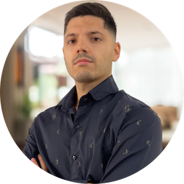

Javier Caballero
Software Developer in Test
I help teams build quality into the way software gets made, from the first idea to the release.
How I work
- Quality by design
- Clear standards and fast feedback built into the workflow, not added at the end.
- Traceability
- Every change can be followed from requirement to code to release.
- Steady improvement
- Small, regular refinements to how the team works, guided by what the product shows.